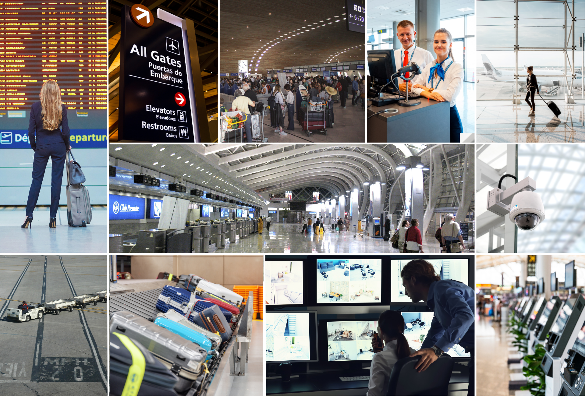

Vaidio로 공항 안전·운영을 혁신합니다 Transform Airport Safety and Operations with Vaidio
공항은 보안, 여객 흐름, 물류, 법규 준수가 동시에 맞물리는 복합 환경입니다. Vaidio는 기존 영상 인프라를 실시간 데이터로 전환하여 더 안전하고 효율적인 공항 운영을 지원합니다. Airports are complex ecosystems balancing security, passenger flow, logistics, and compliance. Vaidio transforms existing video into real-time data—enabling safer and smarter airport operations.

핵심 기능 및 효과 Key Features & Benefits
커브사이드 혼잡 관리 Curbside Congestion Management
차량 번호판 인식(LPR)과 체류 시간 분석으로 픽업·드롭오프 구역에 오래 정차하는 차량을 감지하고 즉시 알림을 전송합니다. Detect and alert on vehicles lingering in pick-up and drop-off zones with LPR and dwell-time tracking to maintain traffic flow.
여객 줄서기 병목 분석 Passenger Line Analytics
TSA·체크인·세관에서 실시간 대기열 길이와 흐름을 모니터링하여 인력 재배치 근거를 제공하고 대기 시간을 단축합니다. Monitor real-time queue lengths at TSA, check-in, and customs to reallocate staff and reduce wait times.
터미널·게이트 흐름 추적 Terminal & Gate Flow Tracking
체크인부터 게이트까지 이동 경로를 추적하여 레이아웃 계획, 인력 배치, 비정상 운영 시 서비스 신뢰성을 개선합니다. Track movement from check-in to gate to improve layout planning, staffing, and service reliability.
제한 구역 침입 감지 Restricted Area Intrusion Detection
객체 감지 및 접근 행동 분석으로 비인가 인원의 출입을 실시간 감지하여 보안 대응 시간을 단축합니다. Detect unauthorized personnel entry in real time using object detection and access behavior analytics to accelerate security response.
영상 포렌식 검색 Video Forensic Search
얼굴, 차량, 객체, 이동 경로 등으로 수천 시간의 영상을 즉시 검색하여 조사 시간을 며칠에서 분 단위로 단축합니다. Search thousands of hours of video instantly by face, vehicle, object, or motion path—reducing days of investigation to minutes.
통합 감시 플랫폼 Unified Surveillance Platform
대기 시간 추적·LPR·혼잡도 분석에 사용하던 개별 솔루션을 하나의 통합 플랫폼으로 대체하여 IT 부담을 줄입니다. Replace niche tools for wait-time tracking, LPR, and crowd flow with one unified platform to lower IT overhead.
주요 과제와 Vaidio 솔루션 Key Challenges & Vaidio Solutions
피크 시간대 픽업·드롭오프 구역에 차량이 장시간 정차하여 교통 흐름이 저해됩니다. Vehicles linger in pick-up and drop-off zones during peak hours, disrupting traffic flow.
LPR과 체류 시간 분석으로 오래 정차하는 차량을 자동 감지하고 단속 인력에 즉시 알림을 전송합니다. Automatically detect lingering vehicles with LPR and dwell-time analytics, instantly alerting enforcement staff.
실시간 탑승자 수 데이터 부재로 셔틀 배차가 비효율적으로 이루어집니다. Lack of real-time passenger count data leads to inefficient shuttle scheduling.
탑승·하차 승객을 자동 집계하여 디스패처에게 실시간 탑승률 데이터를 제공하고 배차를 최적화합니다. Automatically count boarding and exiting passengers to provide dispatchers with live occupancy data for optimized scheduling.
업무 외 시간대 직원 활동, 미인가 출입문 사용, 제한 구역 이동 등 내부 위협을 파악하기 어렵습니다. Identifying insider threats like off-hours employee activity or unauthorized movement in restricted zones is difficult.
이상 행동 패턴을 조기에 감지하여 컴플라이언스 리스크와 평판 훼손을 최소화합니다. Detect risk patterns early to minimize compliance and reputational exposure.
Vaidio를 선택하는 이유 Why Choose Vaidio
30+ AI 엔진 30+ AI Engines
10년 이상 3,000여 개 객체로 훈련된 가장 정확한 AI 분석 엔진을 제공합니다. The most accurate AI engines—trained over 10+ years on 3,000+ objects.
기존 인프라 호환 Works with Existing Infrastructure
Genetec, Milestone, Avigilon 등 주요 VMS와 호환되며 카메라 교체 없이 바로 적용됩니다. Compatible with existing VMS (Genetec, Milestone, Avigilon, etc.) with no camera replacement needed.
유연한 배포 방식 Flexible Deployment
온프레미스, 클라우드, 하이브리드, 엣지 환경 모두에 배포 가능합니다. Deploy on-premises, in the cloud, hybrid, or at the edge.
엔터프라이즈급 아키텍처 Enterprise-Grade Architecture
Kubernetes 기반 멀티테넌트 아키텍처로 플로팅 라이선스와 자동 확장을 지원합니다. Kubernetes-based multi-tenant architecture with floating licenses and auto-scaling.
공항 / 운송 허브 AI 영상분석 도입을 검토 중이신가요? Ready to Transform Your Airports & Transport Hubs Operations?
퓨텍솔루션즈 전문가와 함께 귀사 환경에 최적화된 Vaidio 솔루션을 검토해 보세요. Work with Futec Solutions specialists to explore the optimal Vaidio solution for your environment.